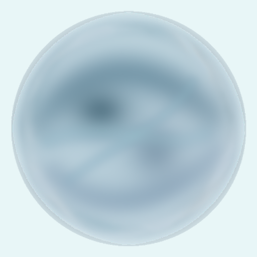

M2.2 GEOMETRY ALTERNATIVE SPIKE
verification-only · route review · M1 sources frozen · no production migration · no animation
VISIBLE INTERNAL STRUCTURE

Geometry carrier: analytic sphere domain + two broad internal mass anchors + four translucent flow sheets.
LAYER EVIDENCE
内部几何层的颜色来自 frozen neutral-water-volume 的统计色；层的位置和曲线是 route-review spike，不是新的 M1 authority。
COMPARISON